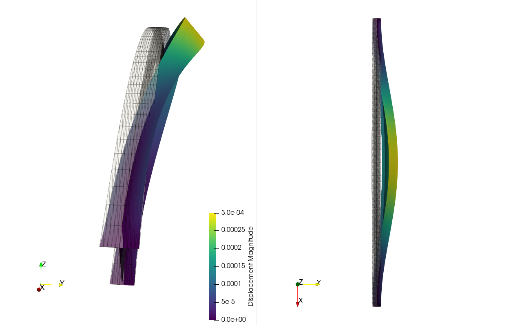

Linear shell model #
Objectives
This tour shows how to implement a linear elastic shell model on a non-manifold mesh. We also cover locking-free discretization and drilling rotation stabilization. \(\newcommand{\sym}{\operatorname{sym}} \newcommand{\skew}{\operatorname{skew}} \renewcommand{\tr}{\operatorname{tr}} \newcommand{\T}{^\text{T}} \newcommand{\utilde}[1]{\tilde{#1}} \newcommand{\uttilde}[1]{\tilde{\tilde{#1}}} \newcommand{\tgrad}{\utilde{\nabla}} \newcommand{\bX}{\boldsymbol{X}} \newcommand{\bsig}{\boldsymbol{\sigma}} \newcommand{\btheta}{\boldsymbol{\theta}} \newcommand{\bvarepsilon}{\boldsymbol{\varepsilon}} \newcommand{\bepsilon}{\boldsymbol{\epsilon}} \newcommand{\bgamma}{\boldsymbol{\gamma}} \newcommand{\bchi}{\boldsymbol{\kappa}} \newcommand{\bX}{\boldsymbol{X}} \newcommand{\bxi}{\boldsymbol{\xi}} \newcommand{\ba}{\boldsymbol{a}} \newcommand{\be}{\boldsymbol{e}} \newcommand{\bt}{\boldsymbol{t}} \newcommand{\bu}{\boldsymbol{u}} \newcommand{\bv}{\boldsymbol{v}} \newcommand{\bx}{\boldsymbol{x}} \newcommand{\bF}{\boldsymbol{F}} \newcommand{\bI}{\boldsymbol{I}} \newcommand{\bM}{\boldsymbol{M}} \newcommand{\bN}{\boldsymbol{N}} \newcommand{\bQ}{\boldsymbol{Q}} \newcommand{\bR}{\boldsymbol{R}} \newcommand{\bV}{\boldsymbol{V}} \newcommand{\be}{\boldsymbol{e}}\)
Download sources
Implementing a shell model in FEniCSx is not necessarily straightforward due to the different behavior in the shell normal and tangential directions. In the FEniCSx-Shells project [Hale et al., 2018], the shell surface is described by a mapping between a parametric 2D domain and the shell initial stress-free configuration. This approach makes it impossible to tackle non-manifold surfaces or closed surfaces for which the mapping would exhibit singularities.
In the present implementation, we will instead work directly with the shell surface (either manifold or non-manifold) described as an assembly of planar facets. In this respect, the approach will bear important similarities with the Elastic 3D beam structures. In particular, we will take advantage of UFL ability to compute gradients over a manifold.
Regarding the interpolation spaces, we will use a P2/CR mixed space for displacements and rotations, i.e. the same choice as in the Locking-free Reissner-Mindlin plate with Crouzeix-Raviart interpolation tour. The present shell model will therefore be a small-displacement version of the nonlinear shell model developed in [Campello et al., 2003].
See also
For the mesh generation, we refer to the Generating a shell model with the Gmsh Python API tour.
Formulation#
Shell kinematics and 3D linearized strain#
The shell initial reference configuration consists of piecewise flat portions and \(\bxi\) in \(\mathbb{R}^3\) will denote an initial point on this surface. \((\be_1,\be_2,\be_3)\) will be a reference local frame with \(\be_3\) the normal to the shell surface, this frame being orthonormal and piecewise constant. A material point \(\bX\) in the shell reference configuration will then be given by:
where \(h\) is the shell thickness
The shell kinematics will be described by its mid-surface displacement \(\bu\) and the infinitesimal rotation vector \(\btheta\) of its director. The new normal director is \(\ba_3 = \bR(\btheta)\be_3 = \be_3+\btheta\times\be_3\) with \(\bR\) the infinitesimal rotation matrix associated with \(\btheta\). Neglecting any thickness change in the shell kinematics, the material point \(\bx\) in the deformed configuration associated with \(\bX\) will then be given by:
Differentiating with respect to \(\bX\), we get:
where we retained only up to first order terms in \(\bu,\btheta\). The 3D deformation gradient is then given by:
where we introduced the in-plane gradient (i.e. the gradient with respect to the shell local tangent plane \((\be_1,\be_2)\)) as follows \(\tgrad\bv = \partial_1\bv \otimes \be_1+ \partial_2\bv \otimes \be_2\). More generally, we will use the following notation \(\utilde{\bv} = v_1\be_1+v_2\be_2\) to denote the in-plane part of \(\bv\).
The linearized strain tensor is then given by:
where \(\sym\) denotes the symmetrized part of a tensor and where we added an incompatible out-of-plane strain \(\epsilon(\zeta)\) which will enable to enforce a plane-stress constraint. The 3D strain can be split into its in-plane components \(\utilde{\utilde{\bvarepsilon}}\), out-of-plane shear components \(\bgamma = 2\utilde{\bvarepsilon}_3\) and out-of-plane transverse components \(\varepsilon_{33}\):
where \(\bepsilon=\sym(\tgrad\utilde{\bu})\) is the membrane strain and \(\bchi = \sym(\be_3\times \tgrad\btheta)\) the bending curvature. We see that we recover the definition of the curvature and shear strain of the Reissner-Mindlin plate model, see Reissner-Mindlin plates for more details.
Elastic energy density#
The internal work of deformation density per shell unit surface is then given by:
where \(\bN\) is the shell membrane tensor, \(\bM\) the bending moment tensor and \(\bQ\) the shear force vector appearing in duality with \(\bepsilon,\bchi,\bgamma\) respectively. The out-of-plane stress \(\sigma_{33}\) appears in duality with the out-of-plane strain \(\epsilon(\zeta)\). The latter is in fact a purely local variable which can be locally eliminated to enforce the plane stress condition \(\sigma_{33}=0\).
Indeed, the shell free energy density can be defined as:
for isotropic linear elasticity.
When minimizing this energy over the shell degrees of freedom, the minimization over \(\epsilon\) is in fact local and we can replace the above free-energy by its plane-stress counterpart:
where \(\psi_\text{ps}\) is the elastic strain energy density for a 2D plane-stress material:
with the plane-stress pseudo Lamé coefficient (see the Isotropic and orthotropic plane stress elasticity tour):
Taking the derivative of the strain energy (33) with respect to the 3D strain components gives the local 3D stress-strain constitutive relation:
where \(\mathbb{C}_\text{ps}\) is the plane-stress elasticity tensor.
Stress-resultant constitutive equations#
Plugging relations (32) into the previous 3D constitutive relation yields the following stress-resultant equations, assuming a homogeneous shell across the thickness:
Note
Note that with the present purely kinematic approach, no shear correction factor appears for the shear force constitutive relation.
Implementation#
Import statements and physical parameters#
We first load the relevant packages and the mesh which has been generated as I_beam.msh, see also Importing a .msh file. We check that the imported mesh is indeed embedded in a global geometry of dimension 3 (ambient 3D space) whereas its topological dimension is 2 (shell surface).
We plot the mesh using pyvista.
import numpy as np
from pathlib import Path
import pyvista
from mpi4py import MPI
import ufl
from dolfinx import mesh, fem, io, plot
import dolfinx.fem.petsc
domain, markers, facets = io.gmshio.read_from_msh("I_beam.msh", MPI.COMM_WORLD)
gdim = domain.geometry.dim
tdim = domain.topology.dim
print(f"Geometrical dimension = {gdim}")
print(f"Topological dimension = {tdim}")
pyvista.set_jupyter_backend("static")
plotter = pyvista.Plotter()
ugrid = pyvista.UnstructuredGrid(*plot.vtk_mesh(domain))
plotter.add_mesh(ugrid, show_edges=True)
plotter.show_axes()
plotter.show()
Info : Reading 'I_beam.msh'...
Info : 38 entities
Info : 612 nodes
Info : 1122 elements
Info : Done reading 'I_beam.msh'
Geometrical dimension = 3
Topological dimension = 2
We then define the corresponding physical parameters. In particular, we consider here a uniformly distributed loading of unit intensity along the downward global \(Z\) direction and of intensity 0.2 along the \(Y\) direction perpendicular to the arch plane in order to induce a combined bending and twisting deflection mode.
# material parameters
thick = fem.Constant(domain, 1e-3)
E = fem.Constant(domain, 210e9)
nu = fem.Constant(domain, 0.3)
lmbda = E * nu / (1 + nu) / (1 - 2 * nu)
mu = E / 2 / (1 + nu)
lmbda_ps = 2 * lmbda * mu / (lmbda + 2 * mu)
# loading (self-weight + transverse component)
f = fem.Constant(domain, (0, 0.2, -1))
Computing a local tangent frame#
We define the local_frame function which returns the UFL representation of the local frame \((\be_1,\be_2,\be_3)\). We first use UFL’s Jacobian function to retrieve the Jacobian of the mapping from reference cells to spatial coordinates. Contrary to the FEniCSx-Shells approach which uses a global analytical mapping between the reference domain and the shell surface, we use here the reference element mapping of the finite-element method. For a shell, the Jacobian is of size \(3\times 2\) with both columns \(\bt_1,\bt_2\) being a vector of the local tangent plane. We therefore compute \(\be_3\), the normal to the mid-surface from \(\bt_1\times \bt_2\). We then have to choose a convention to compute \(\be_1,\be_2\), knowing \(\be_3\). Our convention is that \(\be_1\) lies in the plane orthogonal to \(\be_Y\) and \(\be_3\). If \(\be_3\) happens to be colinear to \(\be_Y\), we set \(\be_1=\be_Z\). \(\be_2\) then follows from \(\be_2=\be_3\times\be_1\).
Attention
We could have also used one of the two vectors \(\bt_1\) or \(\bt_2\) to fix one of the in-plane directions. The issue with this choice is that the orientation of these vectors depends on the local ordering of each element. Their variation across the mesh is therefore not smooth. It is more convenient to use some convention to specify a nicely behaved local orientation. Obviously, our choice is only one among many other possibilities.
def normalize(v):
"""Normalize a vector to unit norm."""
return v / ufl.sqrt(ufl.dot(v, v))
def local_frame(mesh):
t = ufl.Jacobian(mesh)
if mesh.geometry.dim == 2:
t1 = ufl.as_vector([t[0, 0], t[1, 0], 0])
t2 = ufl.as_vector([t[0, 1], t[1, 1], 0])
else:
t1 = ufl.as_vector([t[0, 0], t[1, 0], t[2, 0]])
t2 = ufl.as_vector([t[0, 1], t[1, 1], t[2, 1]])
e3 = normalize(ufl.cross(t1, t2))
ey = ufl.as_vector([0, 1, 0])
ez = ufl.as_vector([0, 0, 1])
e1 = ufl.cross(ey, e3)
norm_e1 = ufl.sqrt(ufl.dot(e1, e1))
e1 = ufl.conditional(ufl.lt(norm_e1, 0.5), ez, normalize(e1))
e2 = normalize(ufl.cross(e3, e1))
return e1, e2, e3
VT = fem.functionspace(domain, ("DG", 0, (gdim,)))
V0, _ = VT.sub(0).collapse()
frame = local_frame(domain)
basis_vectors = [fem.Function(VT, name=f"Basis_vector_e{i+1}") for i in range(gdim)]
e1, e2, e3 = basis_vectors
for i in range(gdim):
e_exp = fem.Expression(frame[i], V0.element.interpolation_points())
basis_vectors[i].interpolate(e_exp)
results_folder = Path("results")
results_folder.mkdir(exist_ok=True, parents=True)
with dolfinx.io.VTKFile(MPI.COMM_WORLD, results_folder / "local_frame.pvd", "w") as vtk:
vtk.write_function(e1, 0.0)
vtk.write_function(e2, 0.0)
vtk.write_function(e3, 0.0)
The local frame is plotted with Paraview as DG0 Functions since we use planar facets with affine triangles. We can check that the orientation is indeed consistent with what has been defined (\(\be_1\) in blue, \(\be_2\) in green, \(\be_3\) in red).
{kind=link}
Function space choice and strain measures#
We now use the afore-mentioned P2/CRinterpolation for the displacement \(\bu\) and the rotation \(\btheta\) variables using a MixedElement.
Ue = ufl.VectorElement("P", domain.ufl_cell(), 2, dim=gdim)
Te = ufl.VectorElement("CR", domain.ufl_cell(), 1, dim=gdim)
V = fem.functionspace(domain, ufl.MixedElement([Ue, Te]))
v = fem.Function(V)
u, theta = ufl.split(v)
v_ = ufl.TestFunction(V)
u_, theta_ = ufl.split(v_)
dv = ufl.TrialFunction(V)
We then define the in-plane projector and the in-plane (tangential) gradient operator (\(\tilde\nabla\) above) as follows:
def vstack(vectors):
"""Stack a list of vectors vertically."""
return ufl.as_matrix([[v[i] for i in range(len(v))] for v in vectors])
def hstack(vectors):
"""Stack a list of vectors horizontally."""
return vstack(vectors).T
# In-plane projection
P_plane = hstack([e1, e2])
def t_grad(u):
"""Tangential gradient operator"""
g = ufl.grad(u)
return ufl.dot(g, P_plane)
We then extract gradient of the in-plane displacement \(\tilde\nabla\tilde\bu\) and define the membrane strain \(\bepsilon\) as its symmetric part. We similarly define the bending curvature \(\bchi\) and shear strain \(\bgamma\) as defined in (32). We also define directional derivatives in a TestFunction for later use.
t_gu = ufl.dot(P_plane.T, t_grad(u))
eps = ufl.sym(t_gu)
beta = ufl.cross(e3, theta)
kappa = ufl.sym(ufl.dot(P_plane.T, t_grad(beta)))
gamma = t_grad(ufl.dot(u, e3)) - ufl.dot(P_plane.T, beta)
eps_ = ufl.derivative(eps, v, v_)
kappa_ = ufl.derivative(kappa, v, v_)
gamma_ = ufl.derivative(gamma, v, v_)
Stress measures#
We now define the corresponding stress measure using the plane stress linear elastic constitutive laws (34).
def plane_stress_elasticity(e):
return lmbda_ps * ufl.tr(e) * ufl.Identity(tdim) + 2 * mu * e
N = thick * plane_stress_elasticity(eps)
M = thick**3 / 12 * plane_stress_elasticity(kappa)
Q = mu * thick * gamma
Drilling rotation stabilization#
A classical problem in shell models involving 6 degrees of freedom (3D rotation) is the absence of any constraint on the drilling rotation \(\theta_3=\btheta\cdot\be_3\). However, this degree of freedom is necessary to tackle non-smooth junctions between planar shell facets which have a different normal vector. In our implementation, we propose to add an additional quadratic energy penalizing the drilling strain, as commonly done for elastic shells.
The drilling strain is obtained from the skew symmetric in-plane component of the transformation gradient \(\bF\) and the drilling rotation:
We consider an additional drilling contribution to the work of deformation given by:
where the drilling stiffness \(\dfrac{E h^3}{h_\text{cell}^2}\) is the usually recommended value in the literature with \(h_\text{cell}\) being the local mesh size which we can obtain from ufl.CellDiameter. We can observe that the drilling stiffness is equal to the typical membrane stiffness \(Eh\) times the non-dimensional factor \(\left(\dfrac{h}{h_\text{cell}}\right)^2\). As the mesh size goes to zero, the drilling stiffness becomes increasingly larger.
drilling_strain = (t_gu[0, 1] - t_gu[1, 0]) / 2 + ufl.dot(theta, e3)
drilling_strain_ = ufl.replace(drilling_strain, {v: v_})
h_mesh = ufl.CellDiameter(domain)
drilling_stiffness = E * thick**3 / h_mesh**2
drilling_stress = drilling_stiffness * drilling_strain
Boundary conditions and resolution#
We then account for fixed supports on both ends and finally form the corresponding bilinear form and linear right-hand side form before solving the corresponding system.
Vu, _ = V.sub(0).collapse()
left_dofs = fem.locate_dofs_topological((V.sub(0), Vu), 1, facets.find(1))
right_dofs = fem.locate_dofs_topological((V.sub(0), Vu), 1, facets.find(2))
uD = fem.Function(Vu)
bcs = [
fem.dirichletbc(uD, left_dofs, V.sub(0)),
fem.dirichletbc(uD, right_dofs, V.sub(0)),
]
Wdef = (
ufl.inner(N, eps_)
+ ufl.inner(M, kappa_)
+ ufl.dot(Q, gamma_)
+ drilling_stress * drilling_strain_
) * ufl.dx
a = ufl.derivative(Wdef, v, dv)
Wext = ufl.dot(f, u_) * ufl.dx
problem = dolfinx.fem.petsc.LinearProblem(
a, Wext, u=v, bcs=bcs, petsc_options={"ksp_type": "preonly", "pc_type": "lu"}
)
problem.solve()
Coefficient(FunctionSpace(Mesh(blocked element (Basix element (P, triangle, 1, equispaced, unset, False), (3,)), 0), MixedElement(VectorElement(FiniteElement('Lagrange', Cell(triangle, 3), 2), dim=3), VectorElement(FiniteElement('Crouzeix-Raviart', Cell(triangle, 3), 1), dim=3))), 3)
We then output the displacement and rotation fields:
u_out = v.sub(0).collapse()
u_out.name = "Displacement"
theta_out = v.sub(1).collapse()
theta_out.name = "Rotation"
with io.VTKFile(MPI.COMM_WORLD, results_folder / "displacement.pvd", "w") as vtk:
vtk.write_function(u_out, 0.0)
with io.VTKFile(MPI.COMM_WORLD, results_folder / "rotation.pvd", "w") as vtk:
vtk.write_function(theta_out, 0.0)
which yields the following deformed configuration (2000 times amplification):
{kind=link}
References#
EMB Campello, PM Pimenta, and P Wriggers. A triangular finite shell element based on a fully nonlinear shell formulation. Computational mechanics, 31(6):505–518, 2003. doi:10.1007/s00466-003-0458-8.
Jack S Hale, Matteo Brunetti, Stéphane PA Bordas, and Corrado Maurini. Simple and extensible plate and shell finite element models through automatic code generation tools. Computers & Structures, 209:163–181, 2018. doi:10.1016/j.compstruc.2018.08.001.